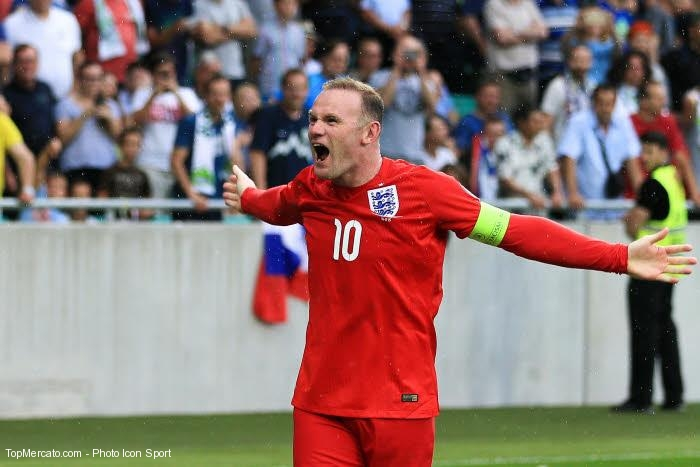

Chương 16
Ngày 9 tháng 7 năm 2009.
Ngày đầu tiên tại buổi tập tiền mùa giải.
Giống những người khác, tôi tăng vài pound sau kỳ nghỉ. Thậm chí khi tôi không tập luyện khoảng một tuần là đủ để tăng 2 hoặc 3 pound3. Nhưng khi trở lại Carrington trong ngày đầu tiên, tôi đã bị sốc. Tôi bước lên chiếc cân trong phòng và nhận được kết quả ngoài sức tưởng tượng.
3.1 pound = 0,45 kg.
7!
Rồi tôi bắt đầu hồi tưởng: một vài chầu rượu khi đi du lịch. Tôi đầm người, không lộ xương và cơ bắp như Ryan Giggs, tôi rất dễ bị tăng cân. Dù vậy thì điều đó cũng không thành vấn đề. Điều này không giống việc huấn luyện viên trưởng đang ngó qua vai tôi khi những số đo xuất hiện, chép miệng và chế giễu việc tôi ăn quá nhiều bánh mì kẹp khoai tây chiên. Bên cạnh đó, tôi hiểu rằng mình có thể thay đổi điều đó trong khoảng 1 đến 2 tuần.
Tất cả các cầu thủ đều được giao những giáo án tập luyện nhẹ để duy trì thể trạng trong kỳ nghỉ, tuy nhiên, các bài tập ấy là không bắt buộc. Câu lạc bộ muốn chúng tôi không quá đà ở khoản ăn uống trong thời gian nghỉ giữa các mùa giải (nhưng thường thì họ cũng không thấy vấn đề gì lắm nếu tôi hơi thừa cân một chút), vậy nên nếu ra nước ngoài thì tôi thích đến phòng gym của khách sạn ba lần mỗi tuần để dùng máy chạy bộ và tập tạ. Bằng cách đó, tôi có thể giữ được sự nhạy bén khi chúng tôi trở lại tập luyện và việc chạy cũng trở nên dễ dàng hơn vào lúc những trận đấu tiền mùa giải khởi tranh.
Khi nhắc về dinh dưỡng, quanh năm, các cầu thủ đều biết nên và không nên ăn gì, nhưng chúng tôi đôi lúc cũng tự thưởng cho bản thân những thứ xa xỉ. Trong khi mùa giải đang diễn ra, tôi nghĩ việc thỉnh thoảng sử dụng đồ ăn nhanh không gây hại gì mấy. Đội bóng luôn có người tư vấn về chế độ ăn uống bất cứ khi nào tôi cần. Điều quan trọng là họ không thích tôi dùng quá nhiều đồ uống chứa caffeine - tôi thường dùng một chút trước trận và nó sẽ không thể có tác dụng như tôi mong muốn nếu cả tuần tôi đã nốc vài cốc cà phê. Những đồ uống tăng lực trước mỗi trận đều giúp tôi cảm thấy “sung” hơn bội phần, nhưng có lẽ là ở khía cạnh tinh thần hơn là thể chất.
Sau những buổi chè chén và vài tuần không đụng đến bóng, hội quân ở giai đoạn tiền mùa giải luôn là một điều khó khăn về mặt thể chất, và không phải ai cũng đoán ra được điều này nếu họ dựa vào không khí trong phòng thay đồ tại buổi gặp gỡ đầu tiên sau mùa hè của các cầu thủ. Khỏe mạnh, rám nắng và những lời tán gẫu rôm rả. Mọi người đều rất hào hứng để bắt đầu mùa giải mới. Nó giống như buổi tựu trường đầu tiên sau kỳ nghỉ hè. Chúng tôi đều có những câu chuyện để kể, mọi người nói về kỳ nghỉ của họ và tất cả cùng cười đùa. Trong thâm tâm, các cầu thủ bóng đá là những đứa trẻ to xác.
Ngoài ra, đây cũng là thời điểm những tân binh có dịp ra mắt. Antonio Valencia và Michael Owen đã chuyển đến Manchester United ở kỳ chuyển nhượng mùa hè. Với Michael, anh ấy không gặp bất kỳ vấn đề nào khi gặp gỡ chúng tôi vì anh ấy biết hầu hết mọi người ở đây, anh ấy đã từng đối đầu với họ khi chơi tại Premier League, hoặc là những đồng đội trên tuyển Anh; Valencia đến từ Wigan Athletic và đây là lần đầu tiên gặp mặt gần như cả đội. Mọi người đều cố gắng giúp cậu ấy cảm thấy như ở nhà, kể chuyện cho cậu ấy nghe và cười đùa cùng nhau.
Quan trọng nhất, tôi muốn được nhìn thấy cậu ấy thi đấu và ngẫm ra vì sao cậu ấy có mặt ở đây. Tôi có thể biết nhiều thứ về một cầu thủ qua cách thể hiện của anh ta ở phòng thay đồ lẫn trên sân tập. Hào hứng luôn là cảm giác của tôi mỗi khi có người mới đến, đặc biệt nếu đó là một tiền đạo hay một cầu thủ có tư duy tấn công. Tôi muốn biết cách họ thi đấu; tôi muốn xây dựng mối liên kết với họ trên sân tập. Nếu họ sẵn sàng lao vào sân tập với tất cả sự nhiệt huyết, tôi biết chắc rằng mấy gã này sẽ nhanh chóng thích nghi được với Manchester United.
Sự thay đổi đáng chú ý hôm nay là việc Ronaldo và Carlos đã rời đi. Vụ chuyển nhượng của Ronnie không làm chúng tôi quá bất ngờ. Real Madrid gõ cửa và giờ cậu ấy đã là một Galactico. Tôi nghĩ mọi người đều có chung cảm giác rằng cậu ấy sẽ ra đi vào mùa hè bởi màn trình diễn chói sáng trong năm qua cùng những tin đồn dày đặc trên báo chí về việc cậu ấy sẽ gia nhập Real Madrid. Ronnie muốn đến Tây Ban Nha, đó là tham vọng của cá nhân cậu ấy, hơn nữa, cậu ấy luôn cằn nhằn về thời tiết Manchester.
“Nơi này quá lạnh!”, câu cửa miệng của Ronaldo vào mỗi dịp tháng 2 – thời điểm mưa bắt đầu trút xuống. Sau đó thì mọi người bắt đầu than vãn theo, không chỉ các cầu thủ ngoại quốc mà ngay cả cầu thủ Anh cũng vậy.
Tôi nhớ đã có thời điểm ở mùa trước, những tin đồn giữa Ronnie và Madrid xuất hiện nhiều quá mức chịu đựng, khiến chúng tôi cho cậu ấy mặc áo bib trắng khi tập luyện chỉ để châm chọc cậu ấy về chuyện đó.
“Nhìn cậu kìa” - chúng tôi hét lên - “Chưa gì cậu đã mặc đồ thi đấu của họ rồi!”
Tôi gần như không hề sốc khi cầm tờ báo lên đọc tại bể bơi trong kỳ nghỉ hè và biết cậu ấy đã gia nhập Real Madrid. Cristiano là một người tốt và là một cầu thủ tuyệt vời. Chúng tôi sẽ nhớ cậu ấy.
Việc Carlos rời đi cũng không bất ngờ lắm nhưng điều đáng nói là cậu ấy đã chọn Manchester City (trong tất cả mọi điểm đến có thể chọn). Đó là một tổn thất dành cho chúng tôi, nhưng có lẽ lại là điều tốt đối với Patrice. Carlos rất lười trong việc học tiếng Anh và Patrice luôn phải giải thích cho anh ấy những gì mọi người đang nói trong cuộc họp của toàn đội hay những buổi nói chuyện tập thể.
Tôi thích Carlos trong khoảng thời gian anh ấy thi đấu cho Manchester United; chúng tôi cảm thấy hòa hợp bởi tác phong thi đấu giống nhau. Carlos rất giàu năng lượng và luôn cống hiến hết mình mỗi khi ra sân. Anh ấy chạy nhiều khủng khiếp trong trận đấu, đến mức anh ấy đôi khi không thể tập luyện được khi trở lại Carrington; anh ấy đã thấm mệt sau trận đấu cuối tuần, nhưng điều đó không ảnh hưởng gì mấy tới lối chơi của anh ấy. Carlos luôn trong trạng thái tốt nhất ở những ngày bóng lăn.
Tôi cảm thấy tiếc cho Carlos vì anh ấy không thể chen chân vào đội hình chính. Anh không làm sai gì nhiều, chỉ là tôi, Ronaldo và Berba chơi quá tốt, nên đã đẩy Carlos lên ghế dự bị trong phần lớn thời gian. Như lẽ thường tình với mọi cầu thủ, Carlos cảm thấy thất vọng. Về cuối mùa, chúng tôi đều biết Carlos đã tính đến chuyện rời đi. Những mẫu cầu thủ như anh ấy muốn được ra sân nhiều hơn. Dù vậy, tôi cũng khá ngạc nhiên khi anh ấy chọn Man City thay vì những nơi khác.
Có ai đó đã nhắc đến một bảng quảng cáo được dựng lên ở trung tâm thành phố.
“Nó là một poster khổng lồ màu xanh da trời in hình Carlos, kèm theo dòng chữ: Chào mừng đến Manchester”, một người đã kể lại.
Không ai tỏ ra quá khó chịu. Thường thì những trò PR kiểu này không được các cầu thủ để tâm tới, nhưng tôi có thể hiểu nếu các cổ động viên cảm thấy khó chịu đôi chút. Manchester là United và City. Tôi nghĩ rằng cổ động viên của chúng tôi sẽ cảm thấy bất mãn khi chứng kiến Carlos khoác lên người chiếc áo màu xanh da trời. Họ đều nghĩ rằng mấy tấm poster đó chỉ là trò đùa rẻ tiền, nhưng có rất nhiều biển quảng cáo xung quanh thành phố mà tôi không trông thấy. Tôi chỉ biết được tin này từ các đồng đội.
Tôi chủ yếu bận tâm về quãng thời gian bất định phía trước. “Làm sao United có thể lấp đầy khoảng trống của hai cầu thủ đẳng cấp thế giới?” Sau đó, huấn luyện viên trưởng bước vào phòng thay đồ để nói điều gì đó. Bầu không khí thay đổi đột ngột. Mọi người đều im lặng.
Ông ấy chào đón chúng tôi trở lại; ông ấy nói về việc chúng tôi đã chơi tốt như thế nào để có thể giành được chức vô địch vào tháng 5 vừa rồi. Ông ấy nói rằng chúng tôi sẽ còn phải chơi tốt hơn ở mùa giải tới vì sức mạnh của Chelsea, Arsenal và Liverpool, và cũng vì City lẫn tiền của họ.
“Nhưng hãy tin vào bản thân mình, các chàng trai”, ông ấy nói. “Vì chúng ta vẫn còn thừa sức để có thể giành chức vô địch, cho dù chúng ta đã mất hai tiền đạo xuất sắc.”
Ông ấy đặt trách nhiệm lên tôi. Cụ thể thì Alex muốn tôi ghi nhiều bàn hơn nữa, đặc biệt khi Ronaldo và Tevez không còn ở đây.
“Này Wayne, tôi muốn cậu có mặt trong vòng cấm và đón nhận những cơ hội nhiều hơn.”
“Nhưng thưa thầy, em luôn chơi dạt biên. Bây giờ thầy muốn em tự tạt bóng và tự đánh đầu sao?”
Tôi đã có một chút bông đùa và cợt nhả, nhưng tôi hiểu ông ấy muốn gì.
“Sẽ có những trận đấu mà tôi sẽ để cậu chơi cao hơn so với thường lệ, Wayne ạ”, ông ấy nói, nó khiến tôi cảm thấy vô cùng hài lòng. Đây là điều mà tôi đã mong chờ từ lâu vì giờ thì tôi có thể tập trung vào việc ghi bàn và tạo ảnh hưởng lên trận đấu theo ý tôi muốn. Không còn phải chạy lên chạy xuống hay phối hợp với các hậu vệ biên ở hành lang cánh nữa.
Và thế là chúng tôi vào việc.
Thời gian cho bài kiểm tra của cả đội.

Vào cuối mùa giải 2008-09, tất cả cầu thủ phải thực hiện bài kiểm tra để đánh giá về lượng mỡ trong cơ thể cũng như nhịp tim. Việc đầu tiên mà tôi phải làm ở giai đoạn tiền mùa giải là cho họ kiểm tra lại và việc đó không khác gì tra tấn: xét nghiệm máu, các huấn luyện viên đo độ căng cơ của từng cầu thủ trong đội; làm bài kiểm tra với máy chạy bộ. Tôi được đeo mặt nạ oxy và trong 18 phút, tôi phải duy trì một tốc độ chạy. Cứ ba phút, bác sĩ lại lấy máu một lần. Từ những kết quả kiểm tra đó, họ đánh giá được tình trạng thể lực cũng như tổng quan sức khỏe. Trong suốt mùa giải, những huấn luyện viên thể lực và các bác sĩ của United luôn nhìn vào bảng kết quả đó để có thể đánh giá chính xác sức mạnh, thể lực và thể trạng của tôi. Bác sĩ nói với tôi rằng ông ấy có thể biết trước bao giờ tôi sắp bị cảm lạnh chỉ bằng việc lấy vài mẫu thử và đối chiếu chúng với kết quả của tôi từ mùa hè.
Khi buổi kiểm tra y tế đã hoàn tất và cả đội đã dùng xong bữa trưa trong căng tin, tôi lái xe về với duy nhất một suy nghĩ trong đầu: Mình sẽ đá tiền đạo suốt mùa này.
Tôi vô cùng sung sướng, đặc biệt sau rất nhiều trận đấu xuất phát ở hành lang cánh trong vài năm qua. Đây chắc chắn là một mùa giải hứa hẹn nhiều thú vị. Nếu có một điều khiến ngày hôm đó của tôi tệ đi thì đó là vì tôi biết rằng buổi tập vào ngày mai tại Carrington sẽ khó khăn hơn nhiều.
Tôi sẽ phải trả giá cho những gì mình đã làm trong kỳ nghỉ vừa qua.
*
Buổi sáng tiếp theo, bóng bắt đầu lăn và tất cả những gì chúng tôi làm là rê bóng - chạy nước rút, chạy bộ, các bài tập 5 đấu 5, tất cả chúng tôi đều bắt đầu lấy lại cảm giác với đôi chân sau quãng thời gian dài không chơi bóng. Dù vậy thì không phải tất cả các câu lạc bộ đều giống nhau. Tại Everton, tôi không nhớ rằng mình có thể thấy bất kỳ quả bóng nào cho đến tuần thứ 2 của giai đoạn tiền mùa giải, và các huấn luyện viên bắt chúng tôi phải chạy đến khi không thể đi nổi bước nào nữa.
Hôm nay, quãng chạy dài nhất chỉ kéo dài có 45 giây. Nó diễn ra với cường độ cao; đó không phải là bài tập thể chất khó nhất mà tôi từng thực hiện trong sự nghiệp, nhưng các bài tập sau đó thì lại khó hơn. Huấn luyện viên trưởng muốn chúng tôi có một buổi tập kép - tập luyện cả buổi sáng lẫn buổi chiều. Chúng tôi có chuyến du đấu tại châu Á sắp tới và ông ấy muốn cả đội phải sẵn sàng. Khoảng sân tập được nới rộng ra, những khung thành kích cỡ tiêu chuẩn đã xuất hiện. Bỗng nhiên, tôi phải bứt tốc ở quãng dài giống như những gì tôi phải làm ở mỗi trận Premier League. Phổi của tôi như bị thủng sau những lần chạy lên xuống không ngừng.
Chúng tôi chơi một trận 90 phút và tim tôi như muốn nổ tung. Tất cả đều tím tái mặt mày sau một giờ đồng hồ. Mọi chuyện được lặp lại trong ngày tiếp theo. Lần này thì ráng được đến phút 75. Nhưng một tuần sau, cả đội đều tỏ ra ổn sau khi trận đấu kết thúc. Đó là thể trạng mà United muốn chúng tôi có. Việc duy trì trạng thái thể lực ở mức cao nhất là rất quan trọng, bởi nhờ chúng mà trong quá khứ chúng tôi đã có được thành công với việc pressing lẫn tấn công cho đến khi tiếng còi mãn cuộc vang lên. Chúng tôi luôn được thúc đẩy để ghi thêm bàn thắng, bất chấp kết quả lúc đó có là thắng, thua hay hòa. Chúng tôi không bao giờ chỉ nhồi bóng vào trong vòng cấm và chờ đợi sự may mắn. Thay vào đó, những đường chuyền kéo giãn đội hình đối thủ và những pha đưa bóng nhắm vào khu vực nguy hiểm mới là cách chơi của đội. Để làm được như thế, thể lực của chúng tôi phải luôn đảm bảo.
Chúng tôi hiện đang có điều đó ngay lúc này.
Vài ngày sau, Manchester United lên đường đến châu Á du đấu ở các quốc gia: Malaysia, Hàn Quốc và Trung Quốc. Chúng tôi bay 16 tiếng để đến Malaysia, sau đó đấu với đội “Các ngôi sao Malaysia” ở sân vận động quốc gia Bukit Jalil, Kuala Lumpur. Rồi đến Hàn Quốc để đá với FC Seoul tại sân vận động World Cup. Cuối cùng là Trung Quốc, nơi chúng tôi đụng độ Chiết Giang Lục Thành tại sân vận động Rồng Vàng. Chuyến đi kết thúc, cả đội trở về.
Chuyến đi kéo dài 10 ngày. Nó lấy đi rất nhiều sức lực của toàn đội do việc di chuyển hay hội chứng rối loạn cơ thể do thay đổi múi giờ. Đổi lại thì tình cảm của các cổ động viên dành cho Manchester United thật không thể tin nổi. Các sân vận động luôn chật kín chỗ ngồi mỗi khi chúng tôi thi đấu, hàng trăm ngàn người chụp ảnh cùng ở mỗi nơi chúng tôi đến. Tôi không thể rời khỏi khách sạn vì ở ngoài đó cứ như thể đang diễn ra buổi hòa nhạc của The Beatles. Nhưng Sir Alex vẫn cho cả đội một đêm xả trại. Toàn bộ chúng tôi đến một nhà hàng để ăn tối, nhưng khi còn chưa kịp nhìn menu, hàng loạt đèn flash của các camera đã nhắm vào chúng tôi từ mọi phía.
Khi mùa giải mới bắt đầu, vài tuần sau tour du đấu tại châu Á, chúng tôi giành chiến thắng trận mở màn trước Birmingham (tôi ghi 1 bàn) nhưng sau đó để thua trên sân của Burnley. Sau đó thì tôi đều ghi bàn ở 4 trận tiếp theo.
22/8: Wigan - Manchester United: 0 - 5
29/8: Manchester United - Arsenal: 2 - 1
12/9: Tottenham Hotspurs - Manchester United: 1 - 3
20/9: Manchester United - Manchester City: 4 - 3
Tôi yêu thích việc được chơi ở vị trí trung phong. Phần lớn thời gian, tôi là tâm điểm của các đợt tấn công trong sơ đồ 4-5-1 và tôi bùng nổ với hệ thống đó. Tôi không tham gia trận đấu nhiều như tôi đã từng, bởi lúc này đây, tôi không còn phải lùi sâu và phòng ngự nhiều như trước nữa, đồng thời nó giúp tôi bảo toàn năng lượng cho đến phút cuối cùng. Tôi chỉ tập trung duy nhất vào việc có mặt đúng nơi và đúng thời điểm, tận dụng cơ hội rồi ghi bàn.
Trận đấu với City có kết thúc “điên nhất” bởi Michael Owen đã ghi bàn thắng quyết định ở phút bù giờ thứ 6 và nó khiến tất cả mọi người phát rồ, điên nhất chắc phải là phía City vì họ cho rằng chúng tôi đã được hưởng nhiều hơn thời gian bù giờ để giành chiến thắng. Báo chí gọi đó là “Fergie Time”; giới mộ điệu cho rằng Ferguson đã gây sức ép lên các trọng tài để có thêm vài phút khi đồng hồ đã điểm giờ chót trong bối cảnh chúng tôi đang rất cần bàn thắng.
Điều đó thật ngu ngốc! Cứ nghĩ mà xem, cả hai đội đang hòa nhau và City cũng có thời lượng bù giờ giống với chúng tôi. Tôi chẳng hiểu nổi vấn đề nằm ở đâu nữa. Nếu City thật sự là một đội bóng tham vọng như cách họ vẫn nói, thì họ nên làm tốt nhất có thể với 7 phút bù giờ đó. Họ nên nghĩ rằng: “Chúng ta phải có thêm bàn thắng.”
Họ không làm được nhưng chúng tôi thì có; chúng tôi biết rằng nếu cứ tiếp tục tạo ra cơ hội, sẽ có ai đó như tôi hay Michael Owen tìm được bàn thắng kết liễu trận đấu. Đó là một trong những lý do mà anh ấy có mặt ở đây, để chia sẻ nhiệm vụ ghi bàn với tôi mỗi khi chúng tôi chuyển sang sơ đồ 4-4-2. Anh ấy có khả năng tạo nên sự khác biệt trong những trận cầu lớn.
Tôi có được 13 bàn thắng trước dịp Giáng sinh. Một phần nguyên nhân khá lớn cho sự tiến bộ này chính là Antonio Valencia. Một cầu thủ chạy cánh tốc độ - với kỹ thuật tốt cùng những đường chuyền tuyệt vời. Cậu ấy thật bùng nổ kể từ khi gia nhập đội bóng. Những pha căng ngang của Valencia có điểm rơi tốt và tôi tận dụng được rất nhiều trong số đó, phần lớn là do tôi đã học được trong các buổi tập rằng, mình phải luôn sẵn sàng di chuyển khi chơi cùng cậu ấy, có lẽ là nhiều hơn cả với Ronaldo trước đây. Ronnie rất sắc bén, nhưng Valencia thường tập trung xộc thẳng về phía trước và tạt nhanh hơn. Đấy dường như đã là bản năng của cậu ấy. Điều đó giúp tôi dễ dàng nhận biết khi nào nên bứt tốc vào vòng cấm hay chạy cắt mặt qua những hậu vệ. Tôi ghi bàn vào lưới Blackburn, Portsmouth, West Ham và Wolves, giờ thì đội bóng đang đứng ở vị trí thứ 2, sau Chelsea. Tôi có được sự tự tin cực kỳ lớn. Những nỗ lực trên sân cỏ của tôi đã được đền đáp. Nếu duy trì phong độ, 2009-10 có thể là mùa giải tốt nhất sự nghiệp của tôi cho đến thời điểm đó.
Có thể tôi sẽ phá được kỷ lục 42 bàn thắng của Cristiano ở mùa giải 2007-08…
*
Tôi đã làm hỏng chuyện.
Mở tỷ số trong thời gian bù giờ của hiệp một. Một món quà được dành cho tôi sau khi hậu vệ của Hull phá hụt bóng từ đường căng ngang của Darren Fletcher. Những phút đầu của hiệp hai, chúng tôi vẫn kiểm soát bóng và chủ động phòng ngự chặt chẽ. Mục tiêu là tìm kiếm bàn thắng thứ hai từ những pha phản công, nhưng tôi mắc phải sai lầm nghiêm trọng: một đường chuyền về lỗi cho Tomasz Kuszczak.
Tôi đang ở vạch giữa sân, dưới áp lực của đối phương và quyết định chuyền về để tạo ra một pha lên bóng mới. Nhưng ngay khoảnh khắc ấy, tôi biết rằng đường chuyền đó quá nhẹ - nó không đến được khu vực 16m50. Tiền đạo của Hull, Craig Fagan lập tức tận dụng điều đó và có cơ hội lớn để ghi bàn.
“Cái quái gì vậy? Thằng cha này ở đâu ra thế?”
Nếu khoảnh khắc đó xảy ra ở đầu sân bên kia, người hâm mộ sẽ gọi đó là đường chọc khe hoàn hảo. Nhưng thay vào đó, pha chuyền bóng của tôi lại đặt Fagan vào thế đối mặt với Tomasz. Lúc đó, tôi đứng như trời trồng, nó giống như một giấc mơ mà mình bị rượt đuổi nhưng tôi không thể nhấc chân được vì nó nặng như thể mắc kẹt trong đống bùn. Thật kinh khủng.
Fagan lừa bóng vượt qua Kuszczak.
Làm ơn, làm ơn đá hỏng đi!
Tôi cảm thấy vô dụng. Tôi đứng đó và chứng kiến tình huống diễn ra. Mọi người đều dõi theo tôi, cả ở sân vận động và trên truyền hình. Tôi cảm thấy mình như một gã hề. Hàng triệu người soi xét sai lầm của tôi. Đang có các cổ động viên Man United chửi bới tôi ngay trong phòng khách của họ, có lẽ đa số đều như vậy.
Làm ơn, làm ơn đá hỏng đi!
Fagan đưa quả bóng đi quá xa; anh ta cố gắng thực hiện đường tạt vào, vượt qua tầm kiểm soát của Kuszczak. Jozy Altidore lao đến để tạo nên điểm chạm đưa bóng vào lưới. Hậu vệ cánh của chúng tôi, Rafael da Silva, đẩy ngã Altidore và tiếng còi của trọng tài chính vang lên.
Phạt đền. Lỗi của tôi.
Hull ghi bàn. Lỗi của tôi.
1-1. Lỗi của tôi.
Máy quay truyền hình chĩa thẳng vào tôi và tôi như thể lọt vào phòng khách của từng người đang theo dõi trước màn hình ti vi. Gương mặt của tôi đã nói lên tất cả; tôi sợ việc thua cuộc, sợ những gì huấn luyện viên sẽ nói. Không cầu thủ nào muốn đổi vị trí cho tôi vào ngay lúc đó.
Và rồi tôi bắt đầu nghe thấy âm thanh kinh khủng ấy: huấn luyện viên trưởng đang hét vào mặt tôi. Việc đứng ở vạch giữa sân đồng nghĩa với việc tôi đang ở rất gần khu vực kỹ thuật. Ông rời khỏi băng ghế chỉ đạo, la hét. Tôi không thể nghe ra những gì ông ấy nói do quá ồn, nhưng tôi biết chắc chắn chẳng có lời khen hay động viên nào. Tôi không điên mà quay lại để nghe rõ hơn những gì ông ấy nói; tôi không muốn bị “sấy” bởi ngài Máy Sấy Tóc.
Tôi biết cách duy nhất để thoát khỏi cơn mưa chỉ trích chính là United giành chiến thắng và tôi chơi tốt hơn trong 30 phút tiếp theo. Thật may là cả hai điều ấy đã xảy ra. Chúng tôi thắng 3-1 và tôi đều góp công trong cả hai bàn sau đó. Tôi chơi tốt đến nỗi được những bình luận viên của đài Sky Sports trao tặng danh hiệu Cầu thủ xuất sắc nhất trận.
Khi trở vào phòng thay đồ, Sir Alex bắt tay từng người một, và đến lượt tôi.
“Cậu may mắn đấy”, ông ấy nói rồi bước đi.
Tôi thở phào nhẹ nhõm. Tôi biết rằng nếu đội thua hoặc hòa, thảm họa sẽ trút xuống đầu tôi.
*
BẢNG XẾP HẠNG PREMIER LEAGUE,
NGÀY 9 THÁNG 1 NĂM 2010
Sau Giáng sinh, chúng tôi hủy diệt Wigan 5 bàn, hòa Birmingham rồi thắng Burnley, Hull (một lần nữa; 4-0 và tôi ghi cả 4 bàn), Arsenal và Portsmouth. Chúng tôi chia điểm với Villa. Man United vẫn đứng nhì bảng vào giữa tháng 2. Sau đó, tôi bị “sấy” sau trận thua 1-3 trước Everton tại Goodison Park.
Không ngạc nhiên lắm vì tôi đã chơi rất tệ; một trong những trận tệ nhất tôi từng chơi và tôi đã để mất bóng, bỏ lỡ cơ hội, chuyền hỏng. Bóng cứ bật ra khỏi người tôi. Tôi không thể làm gì để sửa sai và tôi cảm thấy thật kinh khủng.
Ngay từ những phút đầu tiên, tôi có thể biết được bản thân có đang ở trong trạng thái tốt hay không. Những pha đỡ bóng của tôi gần như ngay từ đầu đã có vấn đề. Những đường chuyền thì tới sai địa chỉ và trái bóng dường như rất khó để kiểm soát, như có sắt trong giày của tôi vậy. Tôi cố gắng thực hiện đường chuyền khó, nhưng không chính xác và tôi cảm thấy chán nản. Tôi cố thực hiện pha tắc bóng để lấy lại tự tin, nhưng lại đá trúng chân cầu thủ đội bạn. Thậm chí khi có cơ hội trước khung thành, tôi sút ra ngoài.
Ở những trận quan trọng như thế này, bạn cần phải khắc phục các vấn đề thật nhanh. Tôi quay lại những thứ cơ bản như thực hiện vài đường chuyền đơn giản. Tôi cố gắng hết sức để bình tĩnh vì không muốn mắc thêm bất kỳ sai lầm nào nữa. Sau một vài phút, sự tự tin của tôi thường sẽ trở lại.
Nhưng hôm nay thì không. Chúng tôi vượt lên nhưng Everton cũng gỡ hòa rất nhanh sau đó. Tôi thật sự không thể kiểm soát được trận đấu đó. Mọi bước xử lý của tôi đều sai. Tôi cứ cố rồi lại cố, nhưng lại càng khiến những pha đỡ bóng hỏng hay các đường chuyền lỗi trở nên tệ hơn. Tôi không thể vượt qua hậu vệ đối phương. Tôi không thể hình dung nổi việc vượt qua họ. Họ đã trở thành những rào cản tâm lý đối với tôi: họ to hơn, nhanh hơn và khỏe hơn tôi.
Tôi biết đối thủ lớn nhất chính là sự thiếu tự tin. Tôi biết tất cả đều do suy nghĩ của tôi mà ra nhưng tôi không thể làm gì khác. Nó đang giết chết trận đấu của tôi. Mọi thứ trông thật khó khăn vào hôm nay và đó là một trong những cảm giác tệ nhất mà tôi từng trải qua với bóng đá. Vào giờ nghỉ, tôi cảm thấy mình như chú cá vàng ở trong bể. Mọi người đều nhìn vào tôi nhưng tôi không thể cải thiện. Một đêm ác mộng, tôi kẹt trong bùn và không thể chạy.
Hiệp hai cũng không tốt hơn là mấy.
Khi tôi chơi như thế, một trong hai điều thường sẽ xảy ra. Thứ nhất là tôi không muốn nhận bóng nhiều như bình thường bởi lo sợ sẽ làm mất nó. Tôi không muốn tham gia quá nhiều vào trận đấu. Tôi không muốn mắc lỗi. Thật may là điều này rất hiếm khi xuất hiện, và chắc chắn không phải là hôm nay, trước những cổ động viên Everton.
Điều còn lại là tôi sẽ thi đấu với mức năng lượng cao nhất. Tôi cố ép bản thân trở lại với trận đấu; tôi lùi sâu để tranh chấp bóng, nhưng lùi càng sâu đồng nghĩa với càng khó ghi bàn. Hơn nữa, nếu không có phong độ tốt, tôi có thể để mất bóng ở khu vực nguy hiểm.
Có những trận đấu mà tôi đã chạy khắp mặt sân với trạng thái này. Khi tôi cố thay đổi trận đấu bằng nỗ lực cá nhân: tôi đã từng phá bóng ngay trên vạch vôi hoặc theo sát cầu thủ tấn công của đối phương trong vòng cấm. Sau đó thì tôi thường xuống sức ở giai đoạn cuối trận. Khi Everton ghi thêm 2 bàn nữa, đó chính xác là những gì đã diễn ra. Tôi bắt đầu chạy khắp sân và cố để giành lại quyền kiểm soát bóng.
Đôi lúc huấn luyện viên trưởng thấy tôi chơi tệ, ông ấy sẽ cố giúp tôi lấy lại bình tĩnh. Hoặc đôi lúc, ông ấy đưa tôi ra khỏi sân.
Tôi ghét bị thay ra. Khi tôi thấy trọng tài thứ tư giơ biển báo thay người với số 10 trên đó, tôi thường cảm thấy chán nản với bản thân. Nếu tôi không chơi tốt, tôi biết điều đó, nhưng tôi muốn ở lại để sửa chữa những sai lầm đã gây ra.
Nhưng tôi cũng phải thừa nhận rằng có vài lần tôi cảm thấy được giải tỏa khi bị thay ra. Nếu tôi có một trận đấu ác mộng, tôi sẽ để ý đến trọng tài thứ tư và những con số trên biển báo thay người. Đôi lúc tôi nghĩ, Tại sao không thay tôi ra? Hôm nay tôi sẽ không thể khởi sắc được đâu.
Và rồi một khi đã ngồi trên ghế dự bị, tôi lại cảm thấy khó chịu.
Mọi người nói trông tôi khá buồn rầu khi bị thay ra. Thì rõ ràng là như thế. Nhưng sự tức giận đó không phải dành cho huấn luyện viên trưởng, bởi tôi thường hiểu tại sao ông ấy quyết định như thế. Tôi trông như vậy bởi tôi tức giận với chính mình. Danh dự của tôi đặt cả vào trận đấu. Nếu tôi chơi tệ, tôi sẽ phát điên.
Hôm nay, Sir Alex giữ tôi đến hết trận và chúng tôi thua 3-1.
Ở phòng thay đồ sau trận đấu, ông ấy quát tôi:
“Tôi sẽ không bao giờ cho cậu đá chính ở cái sân vận động này thêm lần nào nữa. Cậu chơi quá tệ ở nơi đây.”
Có lẽ ông ấy đúng. Tôi thường trải qua những ký ức không mấy đẹp đẽ tại Goodison Park bởi chơi ở đây vẫn có ý nghĩa lớn với tôi. Tôi vẫn muốn chứng minh cho các cổ động viên của Everton thấy rằng tại sao tôi bỏ họ lại phía sau, và tôi đã trở thành cầu thủ như thế nào. Tôi luôn muốn chứng minh những điều đó mỗi khi chơi tại đây. Tất nhiên, tôi đã chơi tốt một, hai trận gì đó ở Goodison Park, nhưng phần còn lại thì kinh khủng.
Hôm nay là ngày tệ nhất.
*
Khi tôi trở về nhà sau trận Everton, điều gì đó kỳ lạ xảy ra. Coleen mở cửa với thành viên mới của gia đình chúng tôi trên tay - Kai Rooney. Cô ấy cười và nói: “Wayne, hôm nay xui thôi.” Sau đó, cô ấy đưa thằng bé cho tôi. Tôi bước vào nhà và ngắm nhìn con trai mình. Thằng bé nhìn lại tôi và cười. Làm sao tôi có thể bực tức về trận đấu được nữa chứ?
Tôi cười lại. Tôi thấy hạnh phúc vì muốn chơi với thằng bé. Nó mới chỉ 4 tháng tuổi thôi nhưng đã kéo tôi ra khỏi tâm trạng tồi tệ này.
“Coleen, đây là lần đầu tiên anh thua mà không thấy khó chịu với điều đó.”
Cô ấy cười. Đây là lần đầu tiên và chúng tôi biết điều đó. Tôi thường xuyên có tâm trạng tồi tệ khi trở về nhà sau mỗi trận thua. Tôi bực tức cả đêm, thậm chí là sang đến ngày hôm sau. Tôi ngồi trên đi văng trong sự hờn dỗi và ngồi im như thế hàng giờ đồng hồ, xem ti vi cho đến 3-4 giờ sáng vì không tài nào ngủ được. Trận đấu cứ được tua lại trong đầu tôi, lặp lại những sai lầm hết lần này đến lần khác, lãng phí cả đống thời gian chỉ để hối hận.
Buồn cười ở chỗ, khi tôi ghi được bàn thắng đẹp hay làm điều gì đó điên rồ trên sân cỏ, mọi thứ lại xảy ra quá nhanh đến nỗi tôi chưa kịp tận hưởng nó trọn vẹn. Sau đó, khi tôi tua lại chúng trong đầu như một chiếc DVD, thật khó để tôi nhớ chính xác những giây phút quyết định đó. Tôi không nhớ được pha khống chế bóng từ một đường chuyền dài vượt tuyến. Tôi không nhớ được cảm giác khi quả bóng rời khỏi chân mình. Tôi không nhớ được khoảnh khắc nhận ra bóng đã vượt qua những đầu ngón tay của thủ môn và xuyên thủng mành lưới.
Còn khi mắc lỗi, tôi lại nhớ tất cả mọi thứ.
Nó cực kỳ rõ ràng và kéo dài vài ngày sau đó. Tôi mường tượng lại tất cả trước khi đi ngủ. Và mỗi lần như thế, tôi cảm thấy hổ thẹn. Một cảm giác tồi tệ.
Có lẽ việc làm cha đã giúp tôi có được cái nhìn cởi mở hơn. Tôi có đam mê mãnh liệt với bóng đá và chiến thắng, nhưng giờ tôi còn có gia đình - đồng nghĩa với những trách nhiệm khác. Ngay lúc này đây, tôi phải dành thời gian cho Kai; dành thời gian để làm một người cha. Tôi không được phép bực tức nữa. Tôi phải một mình đối mặt với những trận đấu ác mộng này.
Vài thứ đã thay đổi…
Nhưng không quá nhiều.
Tôi không thể thay đổi bản chất của mình. Dù giờ đây tôi đã có tâm trạng tốt hơn bình thường sau trận thua Everton, tôi vẫn ghét việc thất bại hơn bất cứ điều gì khác. Tôi biết mình đã chơi tệ và khi Kai lên giường ngủ, tôi lại giằng xé trong lòng. Sau bữa tối, tôi xem lại trận đấu; tôi phân tích những thứ mình đã làm không tốt. Tôi đã cảm thấy khá bực khi nhìn thấy những sai lầm đó trên ti vi, trong đầu tôi lúc đó chỉ có duy nhất một điều: Tôi không thể chờ lâu hơn để đá trận tiếp theo.
Tôi muốn để trận đấu với Everton chìm vào quá khứ bằng cách chơi thật hay trước West Ham. Cho đến khi tiếng còi khai cuộc lại vang lên, màn trình diễn tồi tệ tại Goodison Park cứ lởn vởn trong tâm trí. Nó sẽ là động lực của tôi trong các buổi tập tới; nó sẽ khiến tôi chạy nhiều hơn trong cả tuần đó. Thậm chí, nó sẽ khiến tôi không thể chợp mắt vào ban đêm.
Tôi không thể chờ đến trận kế tiếp.
*
Chúng tôi đánh bại West Ham, 3-0; tôi lập cú đúp. Giờ thì quên đi trận đấu với Everton được rồi.